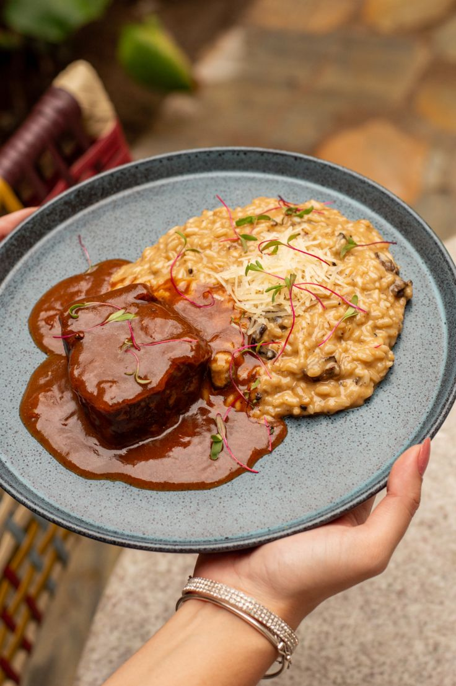
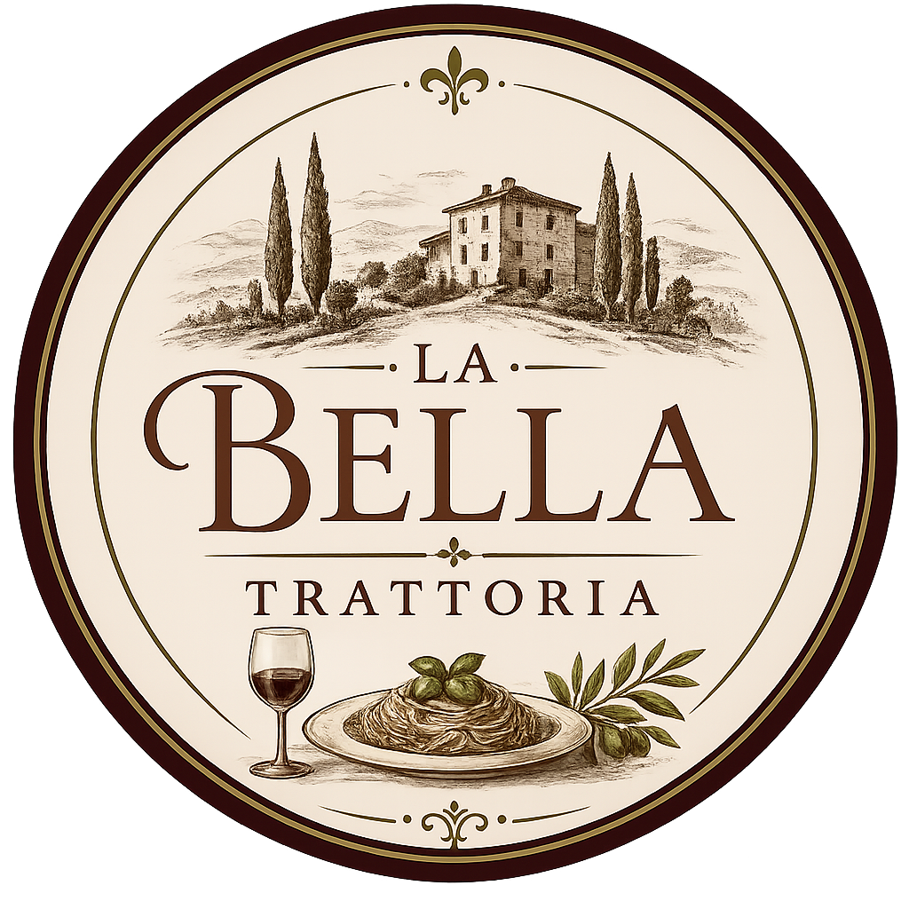
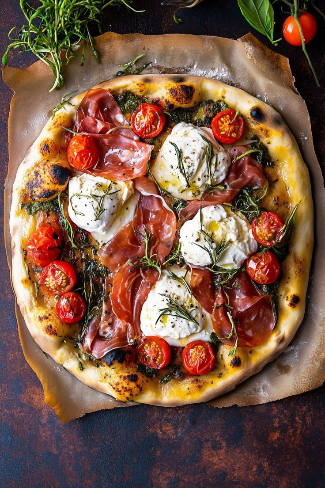
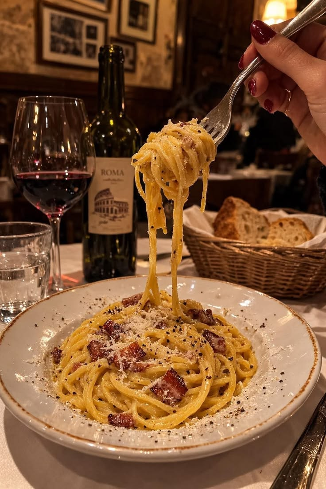
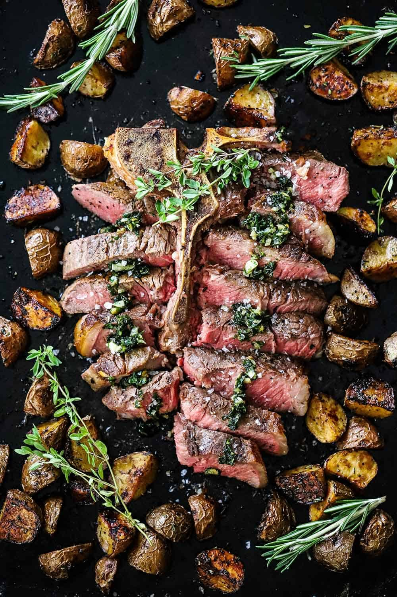
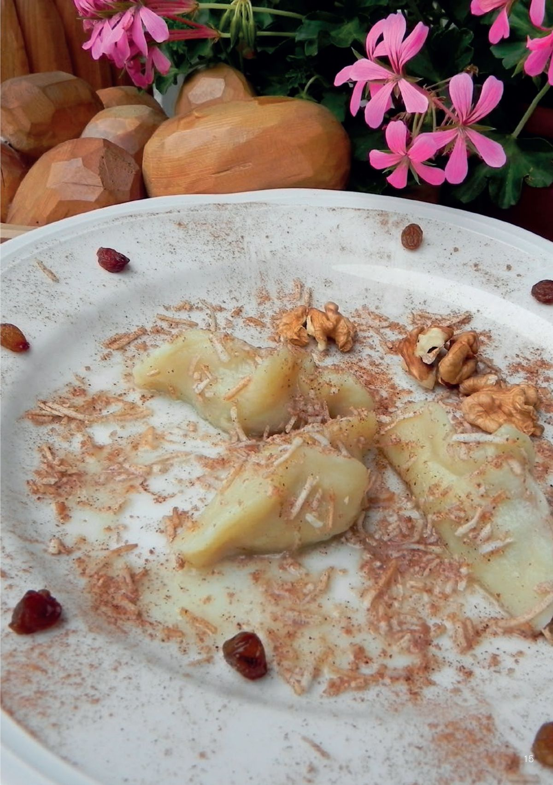
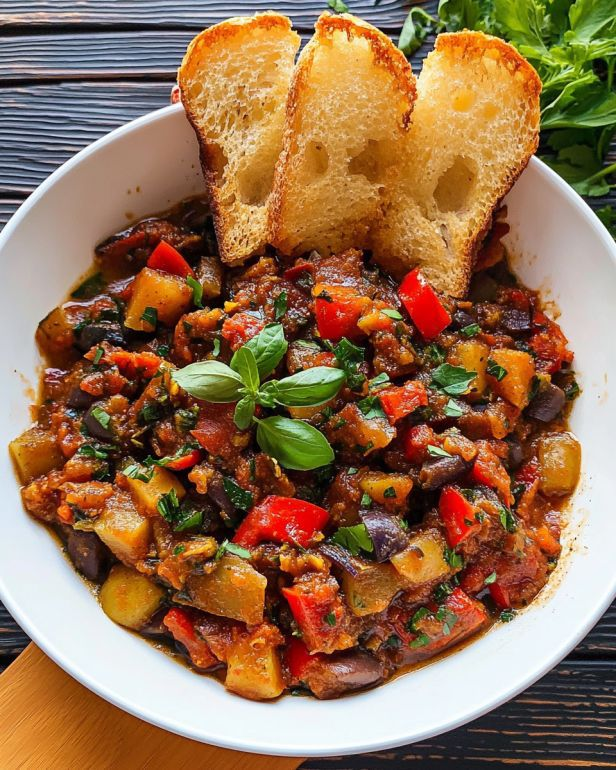

Risoto à milanesa
È um prato de arroz com infusão de açafrão.Feito com arroz arborio, manteiga e queijo parmigiano reggiano.

A melhor experiência Italiana de sua vida!
O restaurante italiano refinado La Bella Trattoria encanta seus clientes com uma experiência gastronômica sofisticada e acolhedora. Inspirado na tradição italiana, o ambiente combina elegância, luzes suaves e uma decoração clássica que remete a charmosa Itália. Nosso cardápio oferece massas artesanais, risotos cremosos, vinhos selecionados e sobremesas irresistíveis. No La Bella Trattoria, cada detalhe é pensado para transformar cada refeição em um momento especial e inesquecível. Atentendemos de terça a sábado a partir das 16:00 as 22:00, pode nos escontrar no seguinte local.
Mapa
È um prato de arroz com infusão de açafrão.Feito com arroz arborio, manteiga e queijo parmigiano reggiano.

um estilo de pizza simples:como molho marinara, mussarela, azeite de oliva e ervas.

Untuosa e decadente, a carbonara é uma delícia romana feita com guanciale, gemas de ovos, queijo e um pouco de pimenta-do-reino.

Esse bife de corte grosso.Grelhado em fogo de lenha e temperado com azeite de oliva e sal, é conhecido por sua textura macia e suculenta.

Esses raviolis são feitos de uma mistura de macarrão e batata recheada com queijo,passas,maçãs, hortelã,chocolate e especiarias.

São mini pastéis recheados com diversos ingredientes. São cozidos e a massa é feita de ovo e farinha de trigo.
É uma mistura agridoce de diferentes vegetais temperados com um molho de extrato de tomate, cebola, aipo, alcaparras e azeitonas.
Consiste num porco inteiro, desossado e muito bem temperado, assado num espeto de 2 a 5 horas.
Fatias de pão italiano tostadas no alho, regadas com azeite e cobertas com tomates frescos e manjericão.
Bolinhos de arroz risoto empanados e fritos, normalmente recheados com queijo ou carne.
Vinho tinto italiano refinado.
Drink clássico sofisticado.
Cerveja italiana premium.